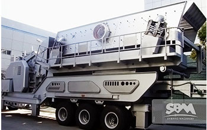

Portable Crusher
- Type:Crusher Machine
- Model:Portable Crusher
- Trademark:SBM
- Certificate:ISO9001: 2000
- Origin:China
- Feeding Size:400mm
Portable Crusher Plant
Portable crusher is SBM to meet all kinds of customers high quality, high yield and painstaking research and development needs a new equipment, almost can be applied in all fields of ore, construction, recycling, crushing, crushing, fine crushing, ultra - fine crushing and screening be equal to anything. The portable crusher plant can be generally divided into : portable jaw crusher plant, portable impact crusher plant, portable cone crusher plant.
At the same time portable crusher highlight the atmosphere brand characteristics, pay more attention to the complete function, stable performance, strong practical nature, and the use is very extensive. Fixed stone lines with the same power and the old section of the mobile station line compared, this machine's performance and stability is more reliable, the function is more complete, more practical, the processing ability greatly enhance.
Integrated solutions for customers with more comprehensive, system, is the pursuit of SBM, therefore, our R & D team to invest a lot of money, a new developed can meet all kinds of customers with high quality, high yield and demand portable crusher station. The tire the mobile station comprises 7 modules of 72 models, almost can be applied in all fields of ore, construction, recycling. The perfect matching between each system, can greatly improve the equipment production.
The portable crusher plant can be used as a single tire equipment operation, or used in the two section, three section or four section of crushing process: from the coarse crushing to pieces, fine and super fine crushing, sieving according to need, can be equipped with a mobile station. Customers can choose "after screening the broken" and "first crushed sieve" to meet the requirements of products, can also be by increasing the back feeding conveyer, realize the closed circuit and open circuit conversion, increase equipment use.
Get Price And Support
Simply complete the form below, click submit, you will get the price list and a SBM representative will contact you within one business day. Please also feel free to contact us by email or phone. ( * Denotes a required field).